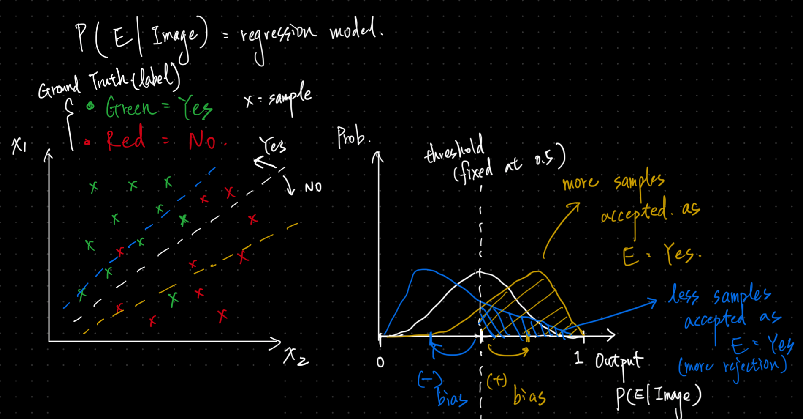

What makes a single neuron call this a sailboat?
The open sailboat has a clear mast. The cabin motorboat has a clear cabin. What happens when a sailboat has both?
Two clues, one score
A human rated each boat on two input features. Mast prominence runs from 0 for no visible mast to 1 for a tall, clear mast. Cabin prominence runs from 0 for no visible cabin to 1 for a large, obvious cabin.
These illustrative ratings share the same 0 to 1 scale. The Interactive reads these supplied numbers. It does not extract them from pixels.
A cabin gives a sailboat a conflicting clue. A tall antenna can resemble a mast on a motorboat. A known label records the boat's class, even when the neuron predicts otherwise.
The neuron multiplies each input by a weight, then adds a bias. The input features are $x_1$ and $x_2$. The parameters are $w_1$, $w_2$, and $b$.
A positive weight makes an increase in its input raise the score. A negative weight makes an increase lower the score and probability.
On comparable scales, a larger weight magnitude gives a larger score change for the same input change. This does not establish a feature's importance in every setting. The sigmoid compresses probability changes near 0 and 1.
The sigmoid turns the score into an estimated sailboat probability. A separate decision rule calls the boat a sailboat when $p\geq0.5$.
Before you open the boat lab. The known labels and ratings stay fixed; the parameters control the predictions.
- On the plot, mast prominence is horizontal and cabin prominence is vertical. Circles mark known sailboats, squares known non-sailboats, and a ring marks your selected boat. Numbers identify boats in the table below the lab.
- The solid line marks $w_1x_1+w_2x_2+b=0$. Points on the line count as sailboats.
Choose a boat. Change its score.
Linear score $z$ =
Estimated sailboat probability $p$ =
Read all twelve boat results
| Boat | Known label | Mast | Cabin | Probability | Prediction |
|---|
You set these weights by hand. A computer finds them with the same uphill climb as Week 3, scoring how well they explain labeled boats. Going deeper shows how.
The math
Work through the math and bias
For the sailboat with a cabin at the starting settings, the two clues almost cancel.
For finite scores, sigmoid stays strictly between 0 and 1. Its midpoint gives the decision rule.
The score is the log-odds, $\log(p/(1-p))$. Bias adds a constant to this score.
When at least one weight is nonzero, $z=0$ defines a line. Setting $b=0$ forces the line through the origin. Changing only $b$ moves the line parallel to itself. At zero-valued input features, the probability is $\sigma(b)$.

If both weights are zero, every score equals $b$. Every boat then has the same probability and prediction.
Predict, then reveal
Each check uses the starting settings. The checks leave your Interactive unchanged.
1. Which probability drops?
Start with weights 3 and -2 and bias -0.5. Change the cabin weight to -3. Does the sailboat with a cabin, the open sailboat, or both get a lower probability?
Reveal the cabin weight comparison
The open sailboat's cabin rating is 0. Multiplying it by either cabin weight gives 0, so its score and probability stay unchanged.
2. Which decisions change?
Start with weights 3 and -2 and bias -0.5. Raise bias to 0. Keep the threshold at 0.5. Which way does the boundary move? Which boats change predictions?
Reveal the bias comparison
At a fixed mast rating, the line moves toward higher cabin prominence. The solid line is the starting boundary. The dashed line is the changed boundary.
Every probability rises. Only boats that cross the 0.5 threshold change predictions.
| Boat | Before probability | After probability | Before prediction | After prediction | Change |
|---|
Going deeper
Fit the parameters to labeled boats
Maximum likelihood training
Maximum likelihood estimation chooses parameters that give the known labels high probabilities. A known sailboat contributes $\log p$. A known non-sailboat contributes $\log(1-p)$.
At the starting settings, the open sailboat gets $p\approx0.900$. The cabin motorboat gets $p\approx0.119$, so its known label gets probability $1-p\approx0.881$.
Average log-likelihood averages the log probabilities assigned to the known labels. It is non-positive and is not a probability. Its exponential is the geometric mean of those label probabilities.
Here $y_i$ is 1 for a known sailboat and 0 otherwise. Gradient ascent takes small steps that raise $L$, as in Week 3. Each step adjusts both weights and bias.
The positive step size $\eta$ controls the adjustment. A fitted bias is a score offset. With other input features present, it need not equal the dataset's marginal log-odds.
Test on boats that did not guide fitting
Split labeled boats into training and test sets. Fit the parameters on the training set. Evaluate the fitted model on held-out test boats that did not guide the fit.
A strong training result and a poor test result can reveal overfitting. These twelve illustrative boats do not establish performance on new boats.
Bias and threshold do different jobs
At fixed weights and threshold, raising bias raises every probability and can produce more sailboat decisions. At fixed parameters, raising only the threshold leaves every probability unchanged and can produce fewer sailboat decisions.
More sailboat decisions can raise sensitivity, also called recall, while reducing specificity. Recall measures the fraction of known sailboats called sailboats. Specificity measures the fraction of known non-sailboats called non-sailboats. Precision measures the fraction of predicted sailboats that are known sailboats. Precision need not change in a fixed direction.
Adding 0.5 to bias at threshold 0.5 gives the same decisions as keeping the original bias and using threshold $\sigma(-0.5)\approx0.378$. The probabilities differ.
For the cabin sailboat, the original score -0.15 gives probability 0.463. With the lower threshold 0.378, it counts as a sailboat. Raising bias instead gives score 0.35 and probability 0.587, above the unchanged threshold 0.5. Both choices predict sailboat.
Raising the original threshold to 0.6 instead keeps probability 0.463 and predicts not a sailboat. The main Interactive always uses threshold 0.5.
If you took the course
The course covers this with a different example.